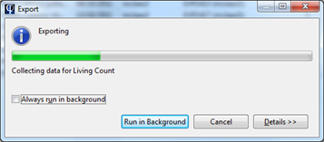
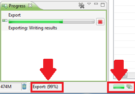

The Progress View gives you an overview of the currently running background progresses. A long-lasting operation may cause this view to appear as a pop-up window. If you are allowed to run a progress in the background (e.g. an export process, as seen on the image below), it would appear in the progress View.

During an operation, the background process will be shown in the bottom part of Phaedra. There will also be a little progress bar that will open the Progress View by clicking on it.
Alternatively, to open the Progress View, go to Window > Show View > Other > General > Progress.
